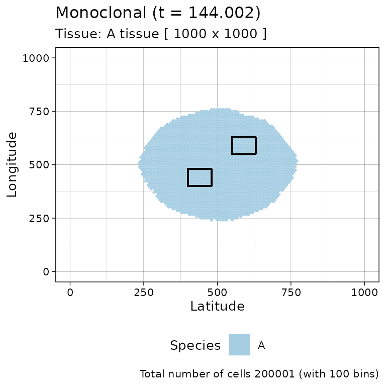
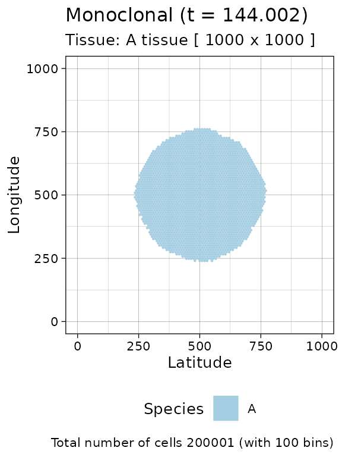
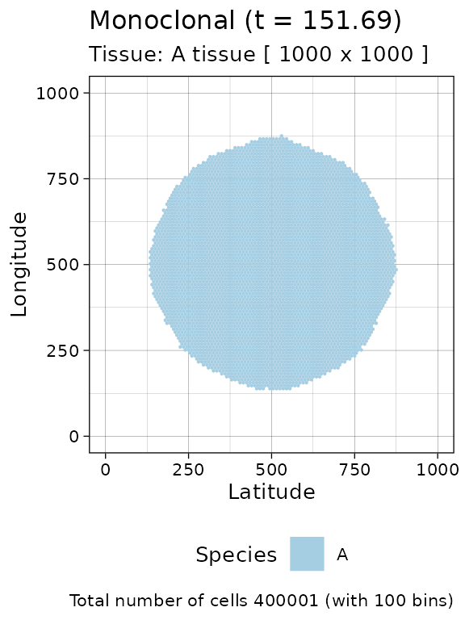
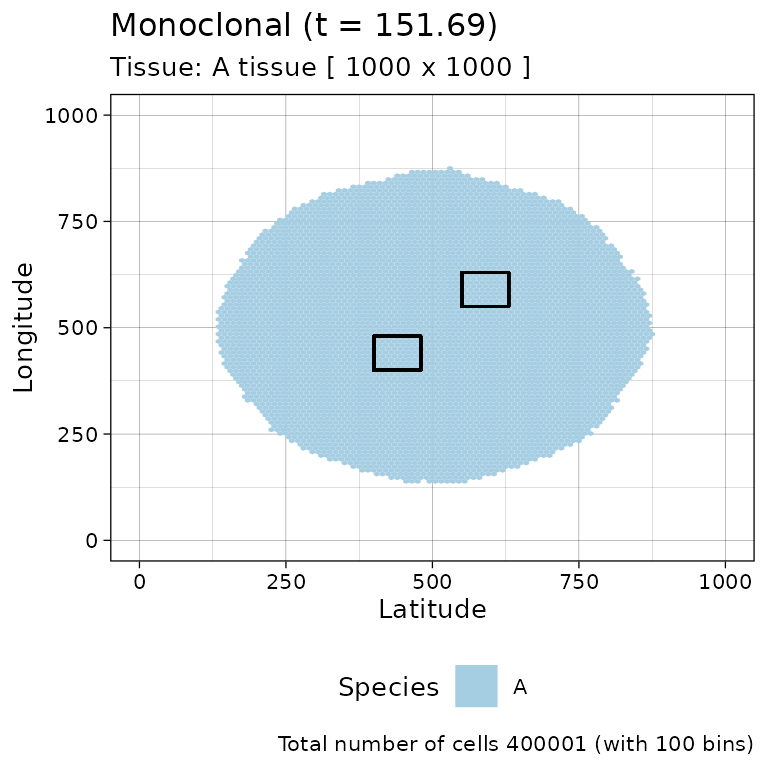

library(rRACES)
library(dplyr)
#>
#> Attaching package: 'dplyr'
#> The following objects are masked from 'package:stats':
#>
#> filter, lag
#> The following objects are masked from 'package:base':
#>
#> intersect, setdiff, setequal, unionIf we now how to simulate a tissue then we can add to our models the sampling of tumour cells. We will show this using two types of simulations, one with a single population, and another with two. Moreover, the type of sampling we implement is of the most general kind:
- multi-region, where at every time point multiple spatially-separated samples are collected;
- longitudinal, where the sampling is repeated at multiple time-points.
Example with one population
Tissue simulation
We use a simple monoclonal model.
# Monoclonal model, no epigenetic rates
sim <- new(Simulation, "Monoclonal")
sim$add_genotype(name = "A", growth_rates = 0.1, death_rates = 0.01)
sim$place_cell("A", 500, 500)
sim$history_delta = 1
sim$run_up_to_size("A", 200000)
current = plot_tissue(sim)
current
First sampling
A sample is defined by a bounding box, which has these parameters:
- a \((x,y)\) coordinate for the bottom left point;
- a \((x,y)\) coordinate for the top right point.
For this simulation, we define two samples with names
"A1" and "B1".
When using multiple samples from the same tissue, the bounding boxes of the samples have to be non-overlapping.
# Bounding box from (400, 400) to (480, 480)
sim$sample_cells("A1", bottom_left = c(400, 400), top_right = c(480, 480))
# Bounding box from (550, 550) to (630, 630)
sim$sample_cells("B1", bottom_left = c(550, 550), top_right = c(630, 630))It is possible to visualise the two boxes.
library(ggplot2)
# Add the contours of the bounding boxes
current +
geom_rect(xmin = 400, xmax = 480, ymin = 400, ymax = 480, fill = NA, color = 'black') +
geom_rect(xmin = 550, xmax = 630, ymin = 550, ymax = 630, fill = NA, color = 'black')
Sampling removes cells from the tissue, as if the tissue was surgically resected.
Note that the definition of a sample by function
sample_cells removes the cells from the simulation and, for
this reason, a new call to plot_tissue will show the box
where the cells have been removed to be white
plot_tissue(sim)
This is also reflected by get_cells, which now will not
find any tumour cell in the sampled region
Tissue simulation
Now we can move forward the simulation prior to sampling again the tissue
# Move to 400K cells
sim$run_up_to_size("A", 400000)
current = plot_tissue(sim)
current
Second sampling
Again, we sample twice ("A2" and "B2") on
the same locations as before (which have been re-filled with cells).
# Bounding boxes as before
sim$sample_cells("A2", bottom_left = c(400, 400), top_right = c(480, 480))
sim$sample_cells("B2", bottom_left = c(550, 550), top_right = c(630, 630))It is possible to visualise the two boxes.
# Add the contours of the bounding boxes
current +
geom_rect(xmin = 400, xmax = 480, ymin = 400, ymax = 480, fill = NA, color = 'black') +
geom_rect(xmin = 550, xmax = 630, ymin = 550, ymax = 630, fill = NA, color = 'black')
Cell division tree for samples cells
We have the possibility of obtaining the tree of cell divisions for all the cells that we have sampled (at every time point). This information is provided as a dataframe with the information of all the cells.
Note that tree this contains ancestor cells that were present in the simulation prior to sampling.
# The tree is a complex object
tree_divisions = sim$get_tree_sampled_cells()